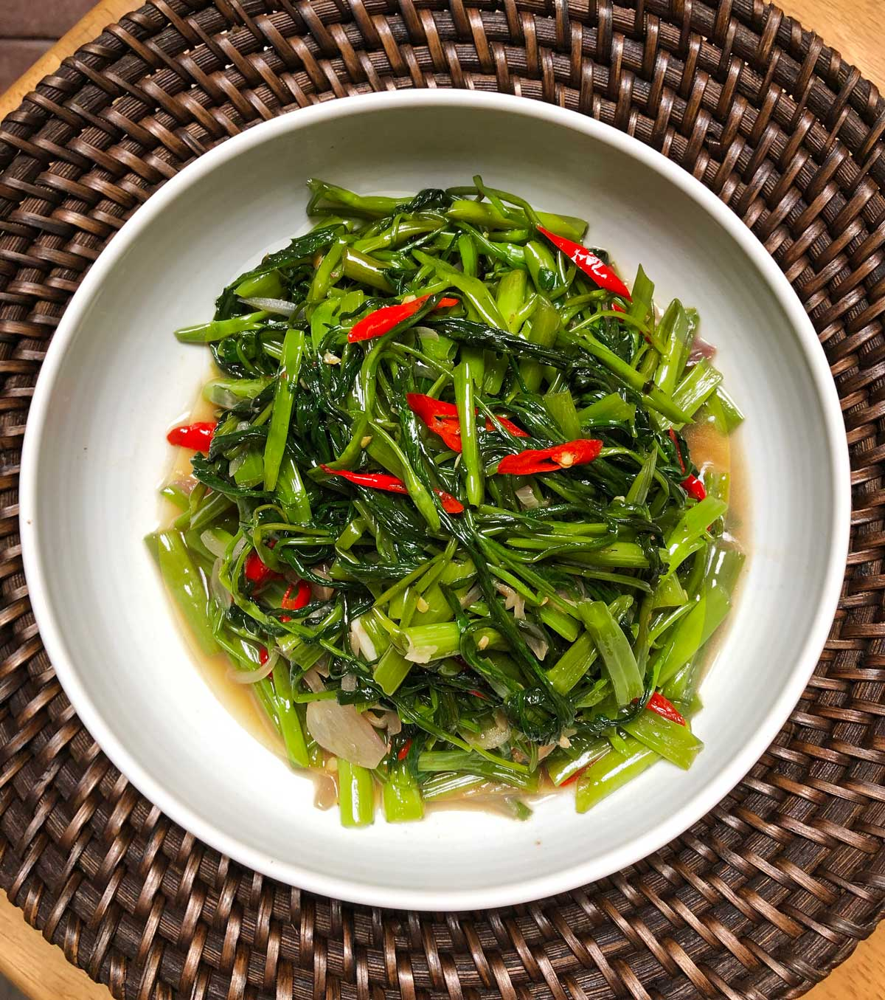

Ingredients
- 1 bunch kangkung (water spinach)
- 2 cloves garlic, minced
- 1 tablespoon sambal belacan
- 1 tablespoon soy sauce
- 1 tablespoon oil
Instructions
- Heat oil in a wok and sauté garlic until fragrant.
- Add sambal belacan and stir-fry for 1 minute.
- Add the kangkung and soy sauce, stirring until the leaves wilt.
- Serve hot as a flavorful vegetable side dish.